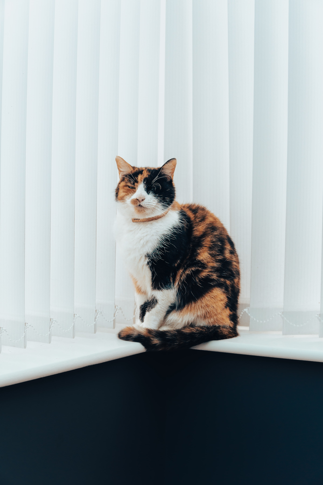

Pet Care
Some basic rules to make sure an animal is safe [source] :
-
- Pet need healthy food
- Just like humans need to eat vegetables to stay healthy, animals like cats and dogs need to get all the nutrients they need by eating healthy food
-
- Give your pets 24/7 access to fresh drinking water
- Water is essential for us to survive, and it is just the same for animals.
-
- Providing a safe, cozy shelter
- Pets need protection from threats, other animals, or just to hang out in general. It is important to give them a space where they are comfortable
-
- Make sure that your pet gets regular exercise
- To ensure that pets are healthy, they should exercise regularly. For a cat, get a few toys and play with them or buy a cat tree, so they can jump around. For a dog, bring it on walks multiple times a day and play fetch for example.

Additional Pet Care Tips for Cats [source] :
- Even if a cat has the opportunity to go outside, it is good practice to get it a cat litter.
- Always keep the litter box clean.
- Train your cat to use a scratching post, especially if it is not allowed to go outside.
Additional Pet Care Tips for Dogs [source] :
- Walk your dog every day to meet sanitary needs
- Don't cut their claws